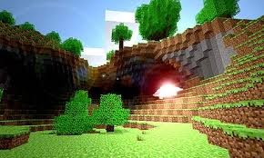

Introduction
The wide world of Minecraft has many different lore points that are insinuated but not outright said. From different pre-generated structures to mobs and items left behind, they put together a sort of story about what may be a world recovering from some kind of disaster. Several things like under-ocean cities, mineshafts, and even whole underground villages seem to be abandoned or left behind by a people who no longer inhabit the world.
